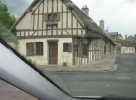
En route pour Vierzon, à travers les petites routes bien droites de la Beauce et de la Sologne. On roule presqu'aussi vite que sur autoroute, y a pas de circulation, on consomme moins, et c'est bien plus joli...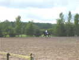
Cette année, le festival a lieu au club hippique de la Picardière. Pas une baraque en planche, mais des installations splendides, je ne sais combien de boxes et 3 carrières. Du 11 au 14 Juillet, concours international de dressage, c'est dire !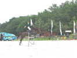
Dans la grande carrière de sable blanc, un magnifique saut d'entraînement, déjà pas mal haut...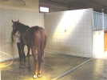
Les installations comprennent des douches... pour les chevaux ! Il y a aussi plein de toilettes et de douches pour les bipèdes, heureusement... Et aussi de nombreux emplacements de camping-cars avec boites électriques pour se brancher, on est prêts à recevoir du monde, ici !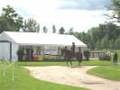
On se cotoie volontiers sans se déranger, il y a d'immenses pelouses rases qui serviront de parking, mais sont bien belles pour le cerf-volant !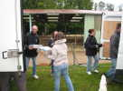
Les cervolistes, il leur faut de l'approvisionnement. On a mis en place 2 chaînes parallèles pour charger les boissons dans le camion frigo...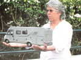
Comme les Mariette trouvent que ca ne suffit pas, ils offrent un pot pour le baptême de leur dernier bébé, une pièce respectable !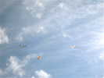
Le samedi matin, bon vent, très turbulent toute la journée derrière les arbres et les bâtiments, et dans une atmosphère instable de cumulus bourrés de thermiques ! Je sors ma grue, dans une configuration encore un peu modifiée, elle fera diverses figures mais restera le plus souvent en l'air !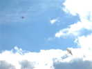
Jean-Marc a sorti son Roi des Airs en K-Way, qui se comporte bien avec sa porosité naturelle ! Le Jessica est moins à l'aise...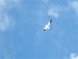
Quelqu'un sort un petit oiseau conçu par Eric Stempell sur la base de 2 scions de canne à pêche, comme ma raie Manta, mais beaucoup plus tendu. Celui-ci a une jolie déco et se comporte très bien...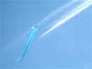
Les toulousains ont échappé à la grêle et réalisé un énorme Chula qui fait bien 4 m d'envergure et vole parfaitement...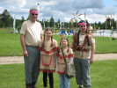
Dans le cadre du concours, les Mariette, outre les cerfs-volants créés, se sont tous déguisés en indiens très réussis !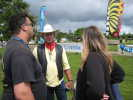
Le big boss, lui personnalise Lucky Luke...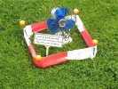
Michel Renouis a réalisé un JdV minimaliste, mais qui, au moins, n'accapare pas les surfaces !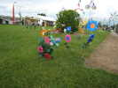
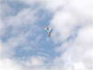
Dans les cerfs-volants, ce Eddy modifié un peu particulier, avec un arrière élargi !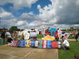
Pour le concours, exposition statique des cerfs-volants des concurrents sur le parquet de démonstration. Demain, ils voleront (on espère...).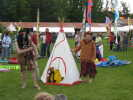
Josette et Jean-Claude jamais à court d'idées sont restés dans l'ambiance, avec cet ensemble très complet...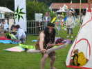
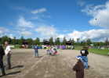
Il y a eu un combat de rokkaku, bien serré au départ, mais vite aéré... Sur 3 manches, j'ai fait 2, 2, et 1er, mais Jean-Claude Mariette a fait 1, 1, et 2, zut, encore une coupe perdue !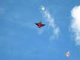
Dans les monofils, on a pu admirer ce beau meteo, assez stable malgré les turbulences...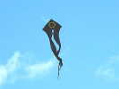
Et puis ce splendide pyrodelta noir de Bernard Arus (je crois) décoré d'un magnifique soleil doré...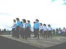
Au soir, démonstration de country danse, avec pot en parallèle avant le dîner...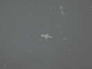
Puis un vol de nuit, dans un vent assez faiblard. Ceux qui sont montés avant volent, pour les autres, c'est dur. Avec mon Harfang, je suis un des rares à pouvoir voler bas...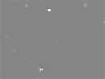
Pas de feu d'artifice, les chevaux ont voté contre... Sous la lune, les projecteurs mettent en valeur les cerfs-volants avec en particulier des UVs qui font briller les yeux phosphorescents de ma chouette devenue bleue !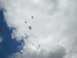
Dimanche matin, vent léger. Pléthore de Rollers, Pentagons, Marconis !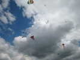
Le vent est léger, mais reste turbulent dans cette atmosphère d'instabilité ! Ca se balade dans tous les sens !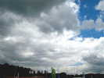
Finalement, ce qui devait arriver arrive. Heureusement, dans le cerf-volant, ça rapproche et on ne se fâche jamais !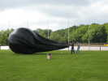
Le vent est presque très faible... Christophe et Daniel gonflent le ballon à air chaud de 6 m de diamètre de ce dernier !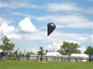
Finalement, la bête s'envolera majestueusement un peu plus tard, quand il n'y aura plus un cerf-volant dans le ciel...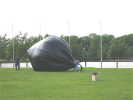
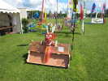
Devant la boutique de Marc trône un magnifique dragon pour lequel il a confectionné une caisse pratique et qui le met en valeur...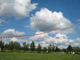
Après quelques essais infructueux pour roder le personnel novice et mettre au point la procédure, ça y est, il s'envole...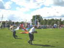
Quand on n'a regardé que le haut, ça a eu l'air facile ! Mais en bas, faut un costaud !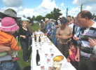
Après des discours émouvants, la municipalité a offert un vin d'honneur avec invitations sur bristol... mais tout le monde s'invite !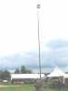
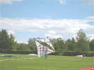
On continue à voler quand même dans la pétole. Hugo lance ses grands Marconis légers, avec l'aide d'Audrey...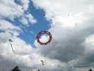
Quelques roues sont montées aussi et même décollent très momentanément pour se faire admirer !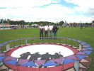
Thierry a aussi gréé la sienne, avec la rosace centrale pour donner de la surface, mais ça n'améliorera guère...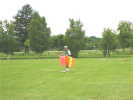
Un cervoliste inventif, pour le monofil en miroir : il passe sa ligne dans un piquet, se met face au vent avec le CV en main et peut ainsi décoller tout seul sans aide extérieure !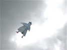
Un joli marin bien sympathique, avec une structure en canne à pêche bien utile pour amortir les atterrissages par planté de tête...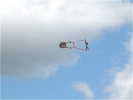
Quant au concours, j'ai bien aimé la petite squaw de Chantal qui se découpe dans le ciel et a très bien volé, contrairement à d'autres !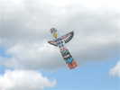
Un petit totem qui a pas mal volé aussi, bien tendu et bien décoré !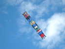
Et un plus grand totem, mais d'inspiration pas très indienne... ou pas très claire pour moi : costume de dompteuse, papillons ?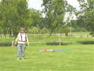
Jean-Claude a réalisé un cerf-volant de plume d'inspiration suédoise... Il a volé, mais pas très longtemps... Pourtant, on doit y arriver, il est bien construit. Structure trop lourde, ou dissymétrie ?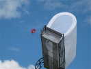
Loïk a réalisé, lui, un wagon comme ceux qui ont traversé les plaines du Far-West vers la Californie... Il ne vole pas mal, mais il aurait fallu un peu plus de vent...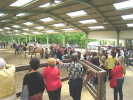
Au club hippique, baptême de poneys gratuit offert par la maison pour les enfants plus ou moins grands...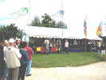
Qui dit concours dit Remise des Prix. On commence par le Rokkaku, c'est Jean-Claude qui a gagné, je vous l'ai dit !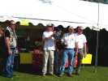
Pour la Création, la taille et l'esthétique ont pas mal joué et c'est l'équipe Hurricane qui a gagné la super-coupe en argent givré...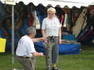
Jean-Claude et Josette ont eu le prix Coup-de-Coeur pour leur tipi et leur déguisement... Jean-Claude se prosterne devant le totem qu'on lui a offert !